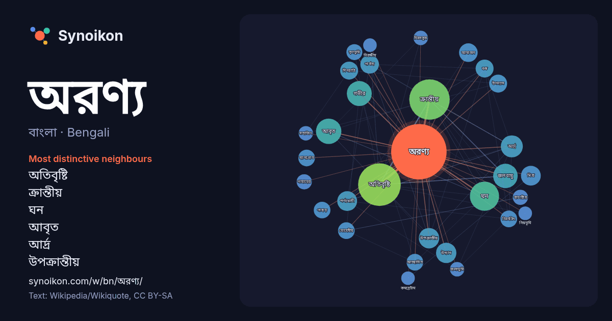

বাংলা · Bengali · word of the day list
অরণ্য
“forest” · The words found around it in 798 instances from Bengali Wikipedia, Wikiquote.

Most distinctive neighbours
- অতিবৃষ্টি 71×
- ক্রান্তীয় 58×
- ঘন 25×
- আবৃত 24×
- আর্দ্র 19×
- উপক্রান্তীয় 18×
- গভীর 18×
- জলবায়ু 18×
- পর্ণমোচী 17×
- আমাজন 15×
- উদ্যান 15×
- দিনরাত্রি 15×
- মিশ্র 14×
- বোহেমীয় 13×
- পার্বত্য 13×
- চিরহরিৎ 13×
- ম্যানগ্রোভ 12×
- শুষ্ক 12×
- আচ্ছাদিত 12×
- তৃণভূমি 12×
× = how many times more often than in general Bengali Wikipedia text.
Most frequent neighbours
- অতিবৃষ্টি 79
- ক্রান্তীয় 71
- ঘন 37
- আবৃত 28
- গভীর 27
- অবস্থিত 26
- জলবায়ু 26
- আর্দ্র 21
- অঞ্চলে 18
- উদ্যান 18
- উপক্রান্তীয় 18
- জাতীয় 17
- পর্ণমোচী 17
- মিশ্র 17
- অঞ্চল 16
- আমাজন 15
- দক্ষিণ 15
- পার্বত্য 15
- মূলত 15
- অঞ্চলের 14
In context
- অন্য সব মহাদেশেই অরণ্য বর্তমান। গরমকালে দশ ডিগ্রি সেলসিয়াসের বেশি তাপমাত্রা ও বার্ষিক পঁচাত্তর সেন্টিমিটার বৃষ্টিপূর্ণ স্থান অরণ্য গড়ে ওঠার পক্ষে উপযোগী। Wikipedia snippets · অরণ্য
- বোহেমীয় অরণ্য নিয়ে আলোচনা করা হয়েছে। বাভারীয় অরণ্যের জন্য দেখুন: বাভারীয় অরণ্য। বোহেমীয় অরণ্য মূলত গভীর অরণ্য আচ্ছাদিত একটি পর্বতশ্রেণী যার পর্বতগুলির গড় Wikipedia snippets · বোহেমীয় অরণ্য
- ক্রান্তীয় অতিবৃষ্টি অরণ্য (ইংরেজি:Tropical rainforest), এক প্রকার অতিবৃষ্টি অরণ্য যা ক্রান্তীয় অতিবৃষ্টি অরণ্য জলবায়ু অঞ্চলে দেখা যায়। এখানে শুষ্ক Wikipedia snippets · ক্রান্তীয় অতিবৃষ্টি অরণ্য
- এই অরণ্যগুলি দেখা যায়। অতিবৃষ্টি অরণ্যের মধ্যে বৃহত্তমটি হচ্ছে দক্ষিণ আমেরিকা মহাদেশের ক্রান্তীয় অঞ্চলের আমাজন নদীর অববাহিকাতে অবস্থিত আমাজন অরণ্য। নিকারাগুয়া Wikipedia snippets · অতিবৃষ্টি অরণ্য
- অন্তর্ভুক্ত। ক্রান্তীয় অতিবৃষ্টি অরণ্য জলবায়ু অঞ্চল সাধারণত খুব উষ্ণ, আর্দ্র এবং ভেজা হয়। ক্রান্তীয় বৃষ্টিপাত অঞ্চলের অরণ্যতে এক ধরনের গ্রীষ্মমণ্ডলীয় জলবায়ু Wikipedia snippets · ক্রান্তীয় অতিবৃষ্টি অরণ্য জলবায়ু
- জন অরণ্য (ইংরেজি: The Middleman), ১৯৭৬ সালে সত্যজিৎ রায় পরিচালিত বাংলা চলচ্চিত্র। এটি মণিশংকর মুখোপাধ্যায়ের উপন্যাস জন্য অরণ্য অবলম্বনে চিত্রায়িত। Wikipedia snippets · জন অরণ্য
- আমাজন অরণ্য, আমাজন জঙ্গল বা আমাজনিয়া নামেও পরিচিত, দক্ষিণ আমেরিকার আমাজন নদী বিধৌত অঞ্চলে অবস্থিত বিশাল বনভূমি। এটি প্রায় পুরো আমাজন নদীর অববাহিকাকে Wikipedia snippets · আমাজন অরণ্য
- পৃথিবীতে অতিবারী অরণ্য অধিক নয়। এগুলো বিভিন্ন ঝড়-সাইক্লোন-টর্নেডো-হারিকেন এবং অতিবৃষ্টির কারণে ক্ষতিগ্রস্ত হচ্ছে। ক্ষতিগ্রস্ত অরণ্য পুনরায় বনায়ন করতে Wikipedia snippets · ক্রান্তীয় অতিবৃষ্টি অরণ্য সংরক্ষণ
More Bengali words
- আয়না
- ইতিহাস
- ঈশ্বর
- কাজ
- কুকুর
- ক্ষমতা
- খাদ্য
- গান
- গ্রীষ্ম
- ঘড়ি
- ঘণ্টা
- ঘোড়া
- ছায়া
- জননী
- জলবায়ু
- জীবন
- ঝড়
- টাকা
- ট্রেন
- দারুচিনি
- দ্বীপ
- নক্ষত্র
- নীরবতা
- পরিবার
- পানি
- পাহাড়
- প্রকৃতি
- বাগান
- বিজ্ঞান
- বিড়াল
- বৃষ্টি
- ভাষা
- মধু
- মরুভূমি
- মানচিত্র
- মৃত্যু
- রাস্তা
- রুটি
- লবণ
- শরৎ
- শহর
- শিল্প
- শীত
- সত্য
- সময়
- সেতু
- সোনা
- স্বাস্থ্য
- হৃদয়
Precomputed on 2026-10-09 with default settings (±5 words, medium corpus). The interactive map can refresh it with live data.